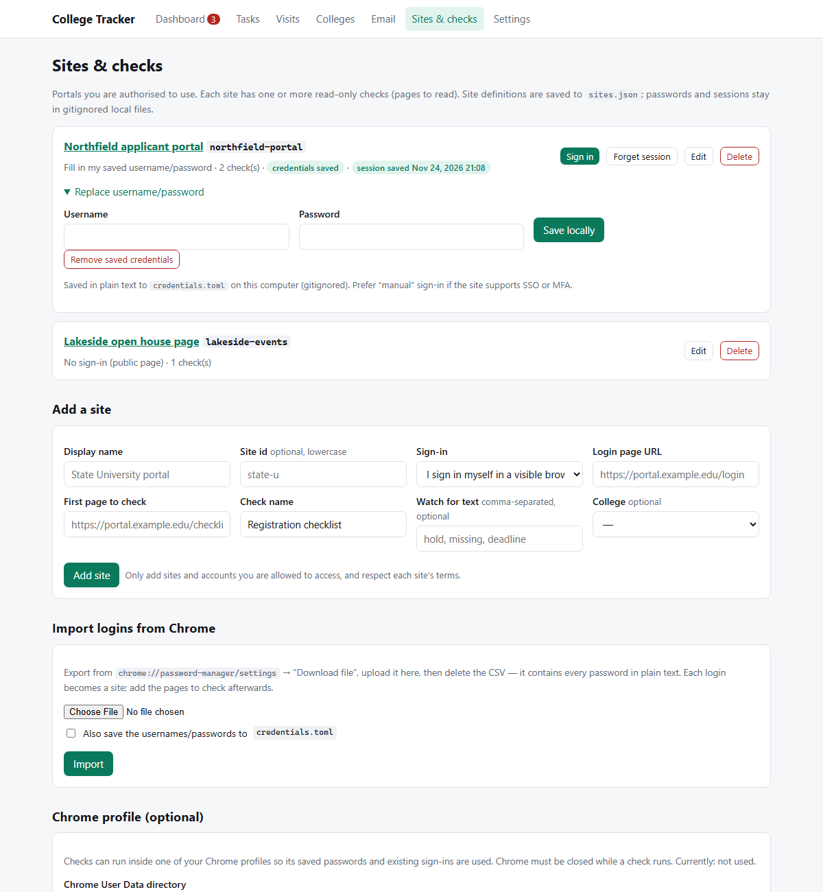

Screenshots
Dashboard and sites-management screenshots go here. Update these whenever the UI changes.


Localhost dashboard • Playwright • Flask
A local-first hub for authorized portal checks, application work, and campus visit planning.
College Tracker currently logs into configured college portals using Playwright,
navigates to registration-checklist pages, and displays the extracted data. It is
evolving into a local-first college planning hub for authorized website checks,
application tasks, and campus visits. Credentials are stored in .env
(never committed). The list of websites to check lives in sites.json
and can be managed through the web UI.
Checks are intended to be read-only and limited to sites and accounts the user is authorized to access. The app will not bypass MFA, passkeys, CAPTCHA, or other site controls. Planned features are tracked in GitHub Issues.
# Windows
.\setup.bat
.venv\Scripts\python run.py
# open http://127.0.0.1:5000http://127.0.0.1:5000sites.json).env (gitignored)Planned: human-assisted sign-in, configurable read-only checks, check history, application tasks and deadlines, and campus visit planning. Visit planning will use official college links supplied by the user; useful starting points are the College Board visit guide and NACAC college fairs.
Two ways to bring credentials in from Google Chrome:
chrome://settings/passwords and click Export passwords to download a CSV./sites).sites.json automatically..env lines to add — copy them into .env and fill in real values.Set CHROME_USER_DATA_DIR in .env to your Chrome User Data directory
(e.g. C:\Users\<you>\AppData\Local\Google\Chrome\User Data on Windows),
then add chrome_profile: "Default" to a site entry in sites.json:
{
"id": "mycollege",
"name": "My College Portal",
"login_url": "https://college.edu/login",
"checklist_url": "https://college.edu/student/registration-checklist",
"chrome_profile": "Default",
"selectors": { ... },
"checklist_selectors": [ "main", "body" ]
}When CHROME_USER_DATA_DIR is set, Playwright launches with your Chrome
profile so Chrome's saved passwords and autofill are available. This works best
in headed mode (PLAYWRIGHT_HEADLESS=false) so you can complete any
MFA/CAPTCHA steps yourself.
Security: .env is gitignored — never commit it.
This project does not read Chrome's encrypted Login Data database directly; it
either imports from your manually exported CSV or reuses Chrome's profile through
Playwright so Chrome handles decryption. Only import from sites and accounts you
own and are authorized to access.
Open the Manage sites page (/sites) to
auto-detect and select a Chrome profile:
.env as CHROME_USER_DATA_DIR and
CHROME_PROFILE.Chrome must be closed for Playwright to use its profile. If Chrome is running, close it first.
Dashboard and sites-management screenshots go here. Update these whenever the UI changes.

college-tracker/
app.py # Flask website (localhost)
scraper.py # Playwright login + checklist extraction
run.py # Entrypoint
sites.json # Websites to log into and check (committed)
.env.example # Credential template (copy to .env, never commit)
docs/ # GitHub Pages site (this folder)
tests/ # mock HTML pages for end-to-end testing© College Tracker — localhost-only tool